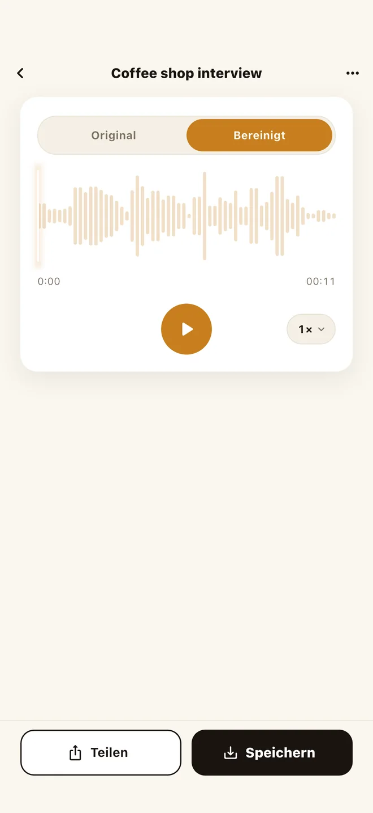

Auf einen Blick
Die vier Dinge, die die meisten zuerst wissen wollen. Jedes Detail steht mit Quelle in der vollständigen Tabelle weiter unten.
| App | Kein Upload | Kein Konto | Offline nutzbar | Kostenlos speichern |
|---|---|---|---|---|
| NoisyNo | ✓Ja | ✓Ja | ✓Ja | ✓Ja |
| Denoise | ✓Ja | –Nicht angegeben | –Nicht angegeben | Kostenpflichtig |
| Denoise.FX | ✓Ja | –Nicht angegeben | ✓Ja | –Nicht angegeben |
| Audio Cleaner | ✓Ja | –Nicht angegeben | –Nicht angegeben | –Nicht angegeben |
| PureVoice | ✓Ja | –Nicht angegeben | ✓Ja | Laut Eintrag gratis |
| NoiseKill | ✓Ja | ✓Ja | ✓Ja | Mit Werbung |
| Offline AI Video Noise Remover | ✓Ja | ✓Ja | ✓Ja | 2 pro Tag |
| Adobe Podcast | ✗Nein | ✗Nein | ✗Nein | 1 Std. pro Tag |
| LALAL.AI | ✗Nein | ✗Nein | Nicht am Handy | Nur Vorschau |
✓ ja · ✗ nein · – vom Anbieter nicht angegeben
Die vollständige Tabelle
Dieselben neun Apps mit den Details hinter jeder Antwort. Die ersten sieben bereinigen auf dem Handy, die letzten beiden sind Cloud-Dienste. Preise sind US-Preise aus App Store, Google Play oder vom Anbieter, und wo ein Anbieter etwas nicht angibt, steht in der Zelle nicht angegeben.
Tabelle seitlich scrollen, um alle Spalten zu sehen →
Apps zur Rauschentfernung laut Angaben der Anbieter, Stand 26. November 2026. Hochgestellte Zahlen verlinken zu den Quellen.
| App | Lädt dein Audio auf einen Server? | Konto nötig? | Preismodell | Plattformen | Was kostenlos ist / Export-Limits | Offline nutzbar? | Bereinigt Video? |
|---|---|---|---|---|---|---|---|
| Die Bereinigung läuft auf dem Gerät | |||||||
| NoisyNoGrayForge (diese Website) | Nein. Dateien werden auf dem Gerät bereinigt; begrenzte Diagnosedaten enthalten weder Dateinamen noch Audio.12 | Nein.13 | Kostenloser Download; Rauschentfernung kostenlos, egal wie lang. Pro: einmalig, kein Abo: $5.99 auf iPhone, iPad und Android; $7.99 auf dem Mac, separat zu kaufen.23 | iPhone, iPad (iOS 15+), Mac (macOS 13.4+), Android234 | Bereinigtes Audio als M4A (AAC), kostenlos, in jeder Länge. Verlustfreies WAV, bereinigtes Video, Stapelverarbeitung, Lautheitsnormalisierung und Zuschneiden brauchen Pro.12 | Ja, nach der Installation.13 | Ja. Kostenlos wird der bereinigte Ton gespeichert; mit Pro bekommst du den Clip als Video zurück, bei dem nur der Ton ersetzt ist.2 |
| Denoise: AI Noise RemoverRoutes Software SRL | Nein. Laut Eintrag wird nichts hochgeladen.5 | Nicht angegeben5 | Kostenloser Download. 3 Exporte für $1.99 oder Denoise Pro: $14.99 lebenslang oder ein Monatsabo.5 | iPhone, iPad (iOS 17+), Mac mit Apple-Chip5 | Bereinigen und Anhören sind kostenlos. Speichern oder Teilen braucht Pro oder ein Exportpaket. M4A, WAV oder Video.5 | Nicht angegeben; alles läuft auf dem Gerät.5 | Ja.5 |
| Denoise.FX for Audio & VideoAndrey Ivankin | Nein. Die Verarbeitung findet auf dem Gerät statt.6 | Nicht angegeben6 | Kostenloser Download. Premium-Artikel: wöchentlich ($3.99 oder $4.99), „Early“ ($29.99 oder $39.99) und lebenslang ($39.99 oder $49.99).6 | iPhone (iOS 15+), Mac mit Apple-Chip6 | Was kostenlos ist, wird nicht angegeben. Speichert Audio in einem Format deiner Wahl und Videos zurück in Fotos.6 | Ja; keine Internetverbindung nötig.6 | Ja.6 |
| Audio Cleaner: AI DenoiseKnotSmith Ltd. | Nein. Die Rauschentfernung läuft lokal auf dem iPhone.7 | Nicht angegeben7 | Kostenloser Download. Premium: $3.99/Woche, $9.99/Jahr oder $19.99 lebenslang, dazu weitere Premium-Artikel von $2.99 bis $7.99.7 | iPhone (iOS 18+), Mac mit Apple-Chip7 | Was kostenlos ist, wird nicht angegeben. Exportiert MP3, WAV, AAC, M4A sowie MP4- oder MOV-Video.7 | Nicht angegeben; die Verarbeitung läuft auf dem Gerät.7 | Ja.7 |
| Noise Reducer, PureVoiceOWLMYST | Nein. Laut den Einträgen verlässt das Audio nie das Gerät.89 | Nicht angegeben89 | Kostenloser Download. Laut Eintrag sind alle Funktionen kostenlos; im App Store gibt es zusätzlich einen Lifetime-Kauf für $19.99.89 | iPhone (iOS 15.6+), Mac mit Apple-Chip, Android89 | Angeblich unbegrenzte Verarbeitungslänge. MP3, WAV, M4A. Was Lifetime freischaltet, wird nicht angegeben.89 | Ja.89 | Nicht angegeben89 |
| NoiseKill: AI Noise RemoverShahLabs | Nein. Laut Eintrag geht nichts an einen Server.10 | Nein.10 | Kostenlos, werbefinanziert. Keine In-App-Käufe aufgeführt.10 | Android-Handys, Tablets, Chromebooks, Android TV10 | Kostenlos, kein Wasserzeichen. Bereinigte Dateien landen in der Galerie.10 | Ja.10 | Ja; MP4, MOV, MKV.10 |
| Offline AI Video Noise RemoverAreeb Labs | Nein. Die App hat keine Internetberechtigung.11 | Nein.11 | Kostenlos. Pro: einmaliger Kauf, kein Abo.11 | Android11 | Kostenlos: 2 Speicherungen pro Tag in voller Länge, kein Wasserzeichen. Pro: unbegrenzt speichern. MP4-Video, M4A-Audio.11 | Ja.11 | Ja; das Bild wird unverändert übernommen.11 |
| Die Bereinigung läuft in der Cloud | |||||||
| Adobe Podcast Enhance SpeechAdobe, Web-App | Ja. Du lädst Dateien in die Web-App hoch.12 | Ja; der Gratis-Tarif beginnt mit einer Anmeldung.12 | Gratis-Tarif. Firefly-Pro-Tarif (inklusive Adobe Podcast Premium): $9.99/Monat für die ersten 6 Monate, Angebot endet am 6. Dezember.12 | Webbrowser12 | Gratis: nur Audio, eine Datei nach der anderen, bis 30 Minuten und 500 MB, 1 Stunde pro Tag. Bezahlt: Dateien bis 2 Stunden und 1 GB, 4 Stunden pro Tag.12 | Nein; läuft im Web.12 | Nur im Bezahltarif (MP4, MOV und mehr)12 |
| LALAL.AI Voice Cleanerlalal.ai | Ja. Laut den Handy-Apps läuft die gesamte Verarbeitung auf den Cloud-Servern von LALAL.AI.131415 | Ja.1314 | Kostenloser Starter (10 Minuten). Lite $90/Jahr, Pro $180/Jahr. Einmalige Aufladungen ab $50.16 | iPhone, iPad, Android, Web, Desktop131416 | Der Gratis-Tarif zeigt nur Vorschauen; um das vollständige Ergebnis herunterzuladen, brauchst du einen Bezahltarif. Dateien bis 200 MB gratis, 2 GB bezahlt.1316 | Nein auf iPhone und Android.1314 | Ja im Web: MP4, MOV, MKV, AVI, M4V.15 |
Store-Einträge ändern sich oft. Die Angaben zum App-Datenschutz (App Store) und zur Datensicherheit (Google Play) füllen die Entwickler selbst aus; Apple weist darauf hin, dass seine Angaben nicht überprüft werden.
Wie wir geprüft haben
GrayForge entwickelt NoisyNo; berücksichtige das beim Lesen. Jede Angabe zu einer anderen App stammt aus deren eigenem US-Eintrag im App Store oder bei Google Play oder von der Website des Anbieters, gelesen am 26. November 2026; nichts stammt aus Testportalen oder Nutzerbewertungen. Wir haben nicht dieselbe Aufnahme durch jede App geschickt, deshalb ordnet diese Seite die Apps nicht danach, wie sauber das Ergebnis klingt. Jede App hier lässt sich kostenlos herunterladen oder ausprobieren, du kannst den Unterschied also selbst hören.
NoisyNo: kostenlos und Pro
Die Rauschentfernung ist kostenlos, egal wie lang, ohne Konto, und das bereinigte Audio wird als M4A (AAC) gespeichert. Pro ist ein einmaliger Kauf ohne Abo: $5.99 auf iPhone, iPad und Android und $7.99 für die Mac-Version, die separat gekauft wird.23



Pro ergänzt den Export bereinigter Videos, verlustfreies 16-Bit-WAV, Stapelverarbeitung, Lautheitsnormalisierung auf die Zielwerte für Hörbücher (−18 LUFS), Podcasts (−16 LUFS) oder Video und Streaming (−14 LUFS) sowie das Zuschneiden vor der Bereinigung.2
Was die Tabelle nicht zeigt
- NoisyNo nimmt die gleichmäßige Geräuschschicht unter einer Stimme weg (Brummen, Rauschen, Lüfter, Klimaanlage, Wind, Raumklang, Verkehr) und ist auf Sprache abgestimmt, nicht auf Musik. Von den Apps hier, die auf dem Gerät arbeiten, sind nur NoisyNo und PureVoice sowohl im App Store als auch bei Google Play zu finden.12 Die Anleitung zur Bereinigung auf dem Gerät zeigt den ganzen Ablauf.
- Denoise hat den größten Werkzeugkasten: Es reduziert auch Raumhall, gleicht die Lautstärke an, bereinigt schon beim Aufnehmen, schneidet, kürzt lange Pausen, trennt Stimme von Musik und verkauft Transkriptionszeit.5
- Denoise.FX hat von den iPhone-Apps hier, die auf dem Gerät arbeiten, die meisten Bewertungen (4,5 Sterne aus 435 US-Bewertungen). Du kannst den Algorithmus von Hand einstellen und Frequenzfilter hinzufügen, und laut Datenschutzangaben sind Kaufhistorie und eine Nutzer-ID mit dir verknüpft.6
- Audio Cleaner hat einen Stärkeregler mit Vorher-nachher-Vergleich, dazu EQ, Effekte und Presets, und kann Dateien per WLAN von einem Computer übernehmen.7
- PureVoice gibt in beiden Stores an, keine Daten zu erfassen, aber beide Einträge wurden zuletzt im August 2025 aktualisiert.89
- NoiseKill spielt vor der Bereinigung der ganzen Datei eine kurze A/B-Vorschau ab, mit den Stufen Gentle, Balanced und Strong. Es ist eine kleine App mit 100+ Downloads.10
- Offline AI Video Noise Remover lässt dich während der Wiedergabe gedrückt halten, um das Original zu hören, und hat eine Sprachverstärkung für leise Stimmen. Die App ist neu: Die aktuelle Version ist ihre erste Veröffentlichung.11
- Der Bezahltarif von Adobe Podcast ist in Adobes Firefly-Pro-Tarif enthalten und bringt Video, Massen-Upload und eine Stärkeeinstellung. Unser Sprachmemos-Vergleich behandelt ihn zusammen mit Kapwing.12
- Der Voice Cleaner von LALAL.AI entfernt auch Hintergrundmusik, Mikrofonrumpeln und Plosivlaute und hat eine De-Echo-Einstellung.15
Ebenfalls einen Blick wert: Auphonic, ein Webdienst für Podcaster, der Rauschen und Hall reduziert, 2 Stunden pro Monat kostenlos mit Jingle1718; Audio Noise Remover & Reducer auf dem iPhone, kostenlos und mit der Angabe „Keine Daten erfasst“, setzt aber iOS 26 voraus19; und auf Android Noise Reducer: Clean Audio, das überhaupt keine Berechtigungen anfordert20, sowie NoiseFix21. Den Schalter „Aufnahme verbessern“ der iPhone-App Sprachmemos behandelt unsere Seite Sprachmemos verbessern vs. NoisyNo.
Was wann passt
- Du willst eine bereinigte Datei behalten oder verschicken, kostenlos. NoisyNo speichert bereinigtes M4A-Audio in jeder Länge, ohne dass du zahlst. Auf Android sind auch NoiseKill (mit Werbung) und Offline AI Video Noise Remover (zwei Speicherungen pro Tag) kostenlos.
- Die Stimme steckt in einem Video, und du brauchst das Video zurück. NoiseKill und Offline AI Video Noise Remover speichern auf Android Video kostenlos. Auf dem iPhone speichert Denoise Video nach einem Kauf, ebenso NoisyNo mit Pro; Denoise.FX und Audio Cleaner speichern auch Video, sagen aber nicht, was kostenlos ist.
- Du willst nicht nur bereinigen, sondern auch bearbeiten. Denoise nimmt auf, schneidet, fügt zusammen, kürzt Pausen und transkribiert; Audio Cleaner bietet zusätzlich EQ und Presets.
- Du nutzt ein iPhone und ein Android-Handy oder einen Mac. NoisyNo läuft auf allen dreien; PureVoice ist ebenfalls in beiden Stores, wurde aber seit August 2025 nicht aktualisiert.
- Die Aufnahme ist vertraulich, etwa ein Meeting, ein Interview oder ein Arzttermin: Jede der Apps, die auf dem Gerät arbeiten, hält sie von den Servern anderer Firmen fern. Mehr dazu in Meeting-Aufnahmen bereinigen.
- Du sitzt an einem Computer, auf dem du keine Apps installieren kannst, und der Clip ist nicht heikel: Adobe Podcast oder LALAL.AI im Browser. Rechne mit einer Anmeldung, einem Upload und den Limits des Gratis-Tarifs.
Offline-Versprechen selbst prüfen
Store-Einträge schreiben die Leute, die die App verkaufen, unsere eingeschlossen. Zwei Minuten verraten dir mehr:
- Schalte den Flugmodus ein und WLAN aus und bereinige dann eine kurze Aufnahme. Wenn sie fertig wird, lief die Arbeit auf deinem Handy.
- Ein Anmeldebildschirm vor der Verarbeitung bedeutet, dass deine Dateien an ein Konto gebunden sind. Lies die Datenschutzerklärung, um zu sehen, was mit ihnen passiert.
- Lies den Datenschutzbereich (App-Datenschutz im App Store, Datensicherheit bei Google Play) und denk daran, dass beide vom Entwickler ausgefüllt werden.
Geräusche, die gar nicht erst aufgenommen werden, musst du nicht entfernen. Geh weg von Lüftern und Klimaanlagen, halte das Handy näher an die Person, die spricht, und probiere auf dem iPhone beim Aufnehmen die Sprachisolation.
Häufige Fragen
Welche Apps zur Rauschentfernung funktionieren offline?
NoisyNo, Denoise.FX und PureVoice auf dem iPhone sowie NoisyNo, NoiseKill, Offline AI Video Noise Remover und PureVoice auf Android geben an, Aufnahmen ohne Internetverbindung zu bereinigen. Denoise und Audio Cleaner sagen, dass alles auf dem Gerät läuft, verwenden aber nicht das Wort offline. Adobe Podcast und die Handy-Apps von LALAL.AI verarbeiten Dateien auf ihren eigenen Servern.
Gibt es eine kostenlose App zur Rauschentfernung ohne Wasserzeichen oder Speicherlimit?
NoisyNo speichert bereinigtes Audio kostenlos als M4A in jeder Länge, ohne Konto. Auf Android ist NoiseKill mit Werbung und ohne Wasserzeichen kostenlos, und Offline AI Video Noise Remover speichert zwei Dateien pro Tag kostenlos. Denoise verlangt Geld fürs Speichern, der Gratis-Tarif von Adobe Podcast erlaubt 1 Stunde Audio pro Tag, und der Gratis-Tarif von LALAL.AI zeigt nur Vorschauen der Ergebnisse.
Laden Adobe Podcast und LALAL.AI meine Aufnahme hoch?
Ja. Adobe Podcast Enhance Speech arbeitet mit Dateien, die du nach der Anmeldung hochlädst, und laut den iOS- und Android-Seiten von LALAL.AI läuft die gesamte Verarbeitung auf dessen Cloud-Servern und erfordert ein Konto.
Ist NoisyNo kostenlos?
Ja. Die Rauschentfernung ist kostenlos, egal wie lang, gespeichert als M4A, ohne Konto. Pro ist ein einmaliger Kauf, $5.99 auf iPhone, iPad und Android und $7.99 für die Mac-Version, der Videoexport, WAV, Stapelverarbeitung, Lautheitsnormalisierung und Zuschneiden hinzufügt.
Quellen
Alle Seiten wurden am 26. November 2026 gelesen. Preise sind die US-Preise, die an diesem Tag auf den Seiten standen.
- NoisyNo product page (GrayForge) · https://grayforge.app/noisyno/Verarbeitung auf dem Gerät, kein Konto, offline nach der Installation, Formate, Pro-Funktionen, kein Abo, Plattformen. Geprüft: 2026-11-26.
- GrayForge llms.txt, NoisyNo section · https://grayforge.app/llms.txtWas es entfernt, auf Sprache statt Musik abgestimmt, Eingabe- und Ausgabeformate, Umgang mit Video mit und ohne Pro, Pro-Funktionen und einmalige Preise, separater Pro-Kauf für den Mac. Geprüft: 2026-11-26.
- NoisyNo: Voice Noise Remover, App Store (US) · https://apps.apple.com/us/app/id6772728543In-App-Käufe (NoisyNo Pro $5.99 und $7.99 für die Mac-Version), Voraussetzungen iOS 15, iPadOS 15 und macOS 13.4, keine Uploads und keine Konten. Geprüft: 2026-11-26.
- NoisyNo: Voice Noise Remover, Google Play (US) · https://play.google.com/store/apps/details?id=com.grayforge.noisynoAndroid-Eintrag, Modell auf dem Gerät, keine Cloud und keine Konten. Geprüft: 2026-11-26.
- Denoise: AI Noise Remover, App Store (US) · https://apps.apple.com/us/app/id946423200Kein Upload, läuft auf dem Gerät, Bereinigen und Anhören kostenlos, Pro oder Exportpaket zum Speichern, Preise der In-App-Käufe, Export als M4A/WAV/Video, Bearbeitungs- und Transkriptionsfunktionen, Kompatibilität. Geprüft: 2026-11-26.
- Denoise.FX for Audio & Video, App Store (US) · https://apps.apple.com/us/app/id1623119654Verarbeitung auf dem Gerät ohne Internetverbindung, Preise der In-App-Käufe, Video-Unterstützung, Modi der Version 3.0, Kompatibilität, Bewertungen, App-Datenschutzangaben. Geprüft: 2026-11-26.
- Audio Cleaner: AI Denoise, App Store (US) · https://apps.apple.com/us/app/id6751505212Rauschentfernung läuft lokal, Preise der In-App-Käufe, Exportformate, Video-Unterstützung, EQ und Presets, Voraussetzung iOS 18. Geprüft: 2026-11-26.
- Noise Reducer, PureVoice, App Store (US) · https://apps.apple.com/us/app/id6748527663Offline, keine Uploads, Lifetime $19.99, Formulierung „all features free“, MP3/WAV/M4A, Kompatibilität, Angabe „Data Not Collected“, letztes Update August 2025. Geprüft: 2026-11-26.
- Noise Reducer, PureVoice, Google Play (US) · https://play.google.com/store/apps/details?id=com.owlmyst.ai.purvoiceOffline, keine Uploads, In-App-Käufe, keine Datenerfassung, aktualisiert am 27. August 2025. Geprüft: 2026-11-26.
- NoiseKill: AI Noise Remover, Google Play (US) · https://play.google.com/store/apps/details?id=com.mcore.noisekillAuf dem Gerät, kein Internet nötig, kein Konto, kein Wasserzeichen, enthält Werbung, Video- und Audioformate, unterstützte Geräte, Abschnitt Datensicherheit. Geprüft: 2026-11-26.
- Offline AI Video Noise Remover, Google Play (US) · https://play.google.com/store/apps/details?id=com.areeblabs.noiseremoverKeine Internetberechtigung, keine Anmeldung, kostenlos (2 Speicherungen pro Tag) und einmaliges Pro, Ausgabe als MP4 und M4A, erste Veröffentlichung. Geprüft: 2026-11-26.
- Adobe Podcast plans · https://podcast.adobe.com/en/plansLimits des Gratis- und des Firefly-Pro-Tarifs für Enhance Speech, Anmeldung, Upload einer Datei nach der anderen, Video im Bezahltarif, Angebot $9.99/Monat für die ersten 6 Monate bis 6. Dezember. Geprüft: 2026-11-26.
- LALAL.AI for iOS · https://www.lalal.ai/ios-app/Verarbeitung auf den Cloud-Servern von LALAL.AI, Internet und Konto erforderlich, Gratis-Tarif nur mit Vorschau, iPhone und iPad. Geprüft: 2026-11-26.
- LALAL.AI for Android · https://www.lalal.ai/android-app/Verarbeitung auf den Cloud-Servern von LALAL.AI, Internet und Konto erforderlich, Entfernung von Rauschen und Hintergrundmusik. Geprüft: 2026-11-26.
- LALAL.AI Voice Cleaner · https://www.lalal.ai/voice-cleaner/Onlinedienst, Upload erforderlich, was er entfernt, De-Echo-Einstellung, Videoformate. Geprüft: 2026-11-26.
- LALAL.AI pricing · https://www.lalal.ai/pricing/Tarife Starter, Lite und Pro, Upload-Größenlimits, einmalige Aufladungen. Geprüft: 2026-11-26.
- Auphonic pricing · https://auphonic.com/pricingKostenlos 2 Stunden pro Monat mit Jingle, wiederkehrende Credits ab $11 pro Monat bei jährlicher Zahlung, einmalige Credits ab $12 für 5 Stunden, Rausch- und Hallreduzierung in jedem Tarif. Geprüft: 2026-11-26.
- Auphonic help, Production · https://auphonic.com/help/web/production.htmlUpload im Browser, per Link oder aus externen Diensten; Audiodateien werden nur für eine begrenzte Zahl von Tagen gespeichert; Einstellungen für Entrauschung und Hall. Geprüft: 2026-11-26.
- Audio Noise Remover & Reducer, App Store (US) · https://apps.apple.com/us/app/id6782887119Kostenlos, kein Konto, kein Netzwerkzugriff, Video und Audio, Angabe „Data Not Collected“, Voraussetzung iOS 26. Geprüft: 2026-11-26.
- Noise Reducer: Clean Audio, Google Play (US) · https://play.google.com/store/apps/details?id=noise.reducerMitgeliefertes Modell, kein Konto, keine Berechtigungen, keine Werbung, Ausgabe als WAV, nur gleichmäßige Geräusche, keine Stapelverarbeitung. Geprüft: 2026-11-26.
- NoiseFix: offline AI Denoiser, Google Play (US) · https://play.google.com/store/apps/details?id=io.cyberfly.noisefixOffline, kein Konto, Option auf einmaligen Kauf, für Stimme statt Musik gebaut, keine Datenerfassung. Geprüft: 2026-11-26.
NoisyNo — Voice Noise Remover
Entfernt Brummen, Rauschen, Lüftergeräusche, Wind und Raumklang aus Sprachaufnahmen und Videoton, auf deinem Gerät. Kein Upload, kein Konto, und die Rauschentfernung ist kostenlos, egal wie lang.
Sag uns Bescheid, dann korrigieren wir die Tabelle.
Store-Einträge ändern sich. Wenn ein Preis, eine Plattform oder ein Limit oben veraltet ist, auch bei NoisyNo, schick uns eine kurze Nachricht mit dem Link, und die Tabelle wird korrigiert.
grayforge.dev@gmail.com